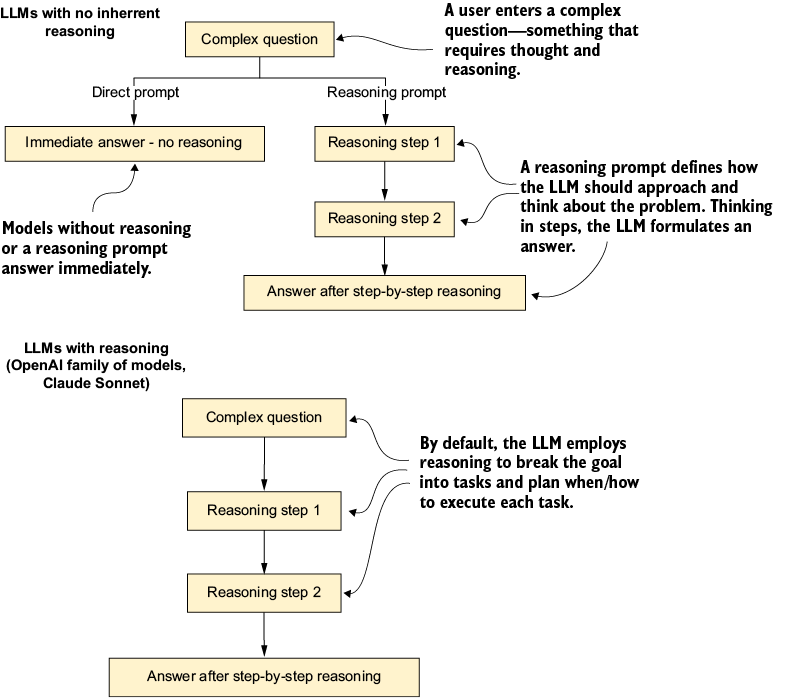
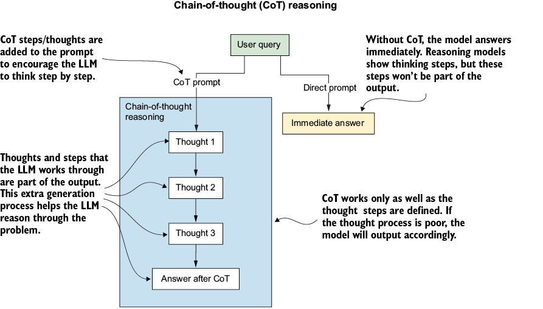
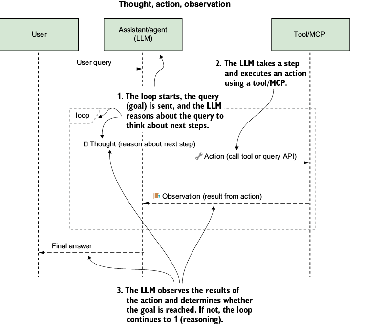
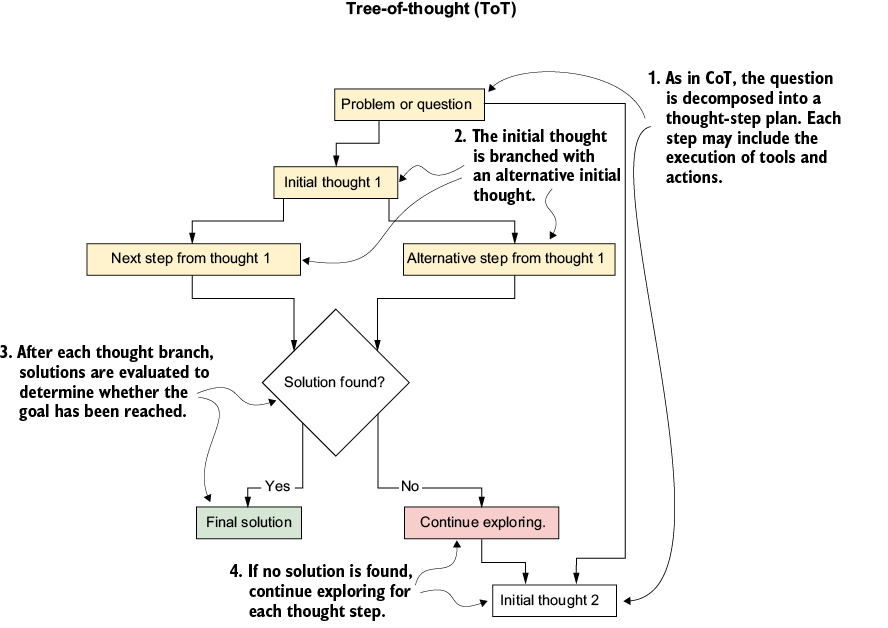
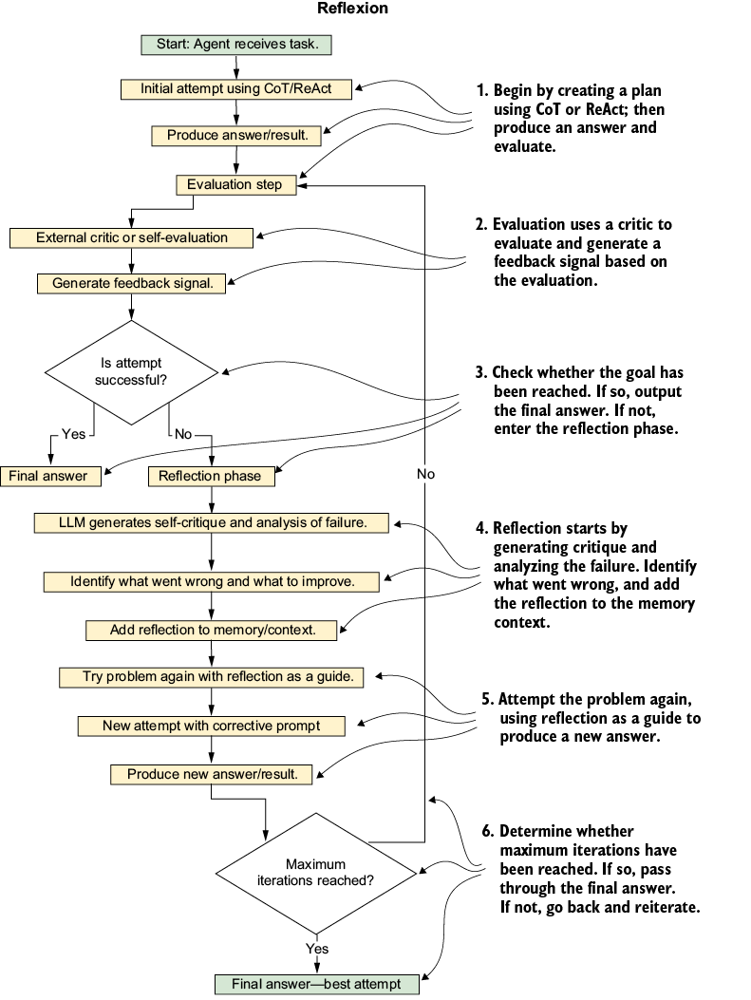
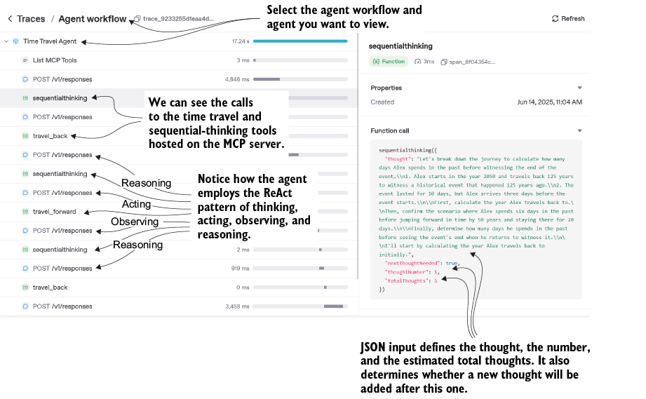

5 Agent reasoning and planning
This chapter covers
- How LLMs reason and plan
- Instructing agents to reason and plan
- Advanced planning with agents
- Utilizing the sequential thinking MCP server
Reasoning, for an LLM, involves two distinct cognitive operations. Decomposition is breaking a problem into smaller subproblems (what are the pieces of this task). Planning is choosing the sequence, dependencies, and approach for solving those subproblems (in what order, with what tools, and how the pieces connect).
Both operations are necessary, and they can fail independently. An agent can decompose a task correctly and then plan badly, or plan correctly over a poor decomposition, and the resulting failure looks different in each case. Naming the distinction matters because the fix depends on which operation broke.
Without both, agents are limited in their ability to use agency to make decisions, carry out actions, and achieve goals. As we will see, the quality of both operations often starts with the LLM powering the agent and the reasoning structures we build around it.
5.1 Understanding LLM reasoning and planning
Decomposition and planning are easiest to see with a stylized example. To achieve “leaving home,” a simple plan might be to get dressed, check the toaster, grab keys, leave.
Real human cognition does not work this way for routine tasks. We rely on learned routines and a rich world model built from embodied experience, both of which LLMs lack. This is why agents need explicit decomposition and planning structures to handle work that human cognition does implicitly.
Non-reasoning LLMs produce their output in a single forward pass without an explicit deliberation phase. Without reasoning scaffolding such as chain-of-thought (CoT) prompting, these models tend to short-circuit into plausible-sounding but shallow answers, especially on multistep problems. The limitation is on the quality of multistep reasoning, not on the number of tasks the mode will attempt.
Reasoning models make the deliberation explicit. They allocate compute to a visible thinking phase before producing the final output, which lets them work through harder problems at the cost of additional tokens and latency. The distinction is not whether reasoning happens at all, but whether it is implicit and bounded by a single pass or explicit and given room to expand.
Chain-of-thought prompting sits between these two. It encourages a non-reasoning model to produce intermediate steps in its output, which improves multistep performance but does not give the model a new capability it did not have. CoT helps strong models more than it rescues weak ones, which is worth knowing before assuming a prompting technique can transform a system’s underlying reasoning ability.
Fortunately, prompt strategies like chain-of-thought have emerged that make reasoning steps explicit in the model’s output. As covered in the previous section, this does not give the model new capabilities so much as it shifts it away from short-circuiting to shallow answers and toward producing intermediate steps it can build on.
A separate development is the rise of dedicated reasoning models. The OpenAI “o” family is the clearest example, with explicit test-time compute and reinforcement learning training to enable extended internal deliberation before answering. Other frontier models, including Claude and Gemini, now expose a configurable reasoning mode that enables a similar deliberation phase, though the underlying training and architectures differ across providers.
The distinction matters in practice. Models with explicit reasoning infrastructure (OpenAI’s o-series, Claude with extended thinking enabled, Gemini with reasoning mode) are designed to spend significant compute on the thinking phase, resulting in corresponding latency and token costs. General-purpose models without that mode rely on prompting techniques like CoT to surface intermediate steps, which is cheaper and faster but bounded by the model’s single-pass capability. Figure 5.1 compares an LLM without reasoning infrastructure (top) and one with extended reasoning for a complex question.

Figure 5.1 Different prompting strategies for reasoning and non-reasoning models
As the figure shows, non-reasoning models need an explicit goal statement augmented with a reasoning and planning strategy to produce structured intermediate steps. Reasoning models produce structured intermediate steps without that scaffolding, drawing on inference-time techniques learned during training. The behavior is still probabilistic and sensitive to prompting, so the same model may reason carefully on one request and short-circuit on another.
This makes evaluation more nuanced than a binary “does it reason or not.” The practical questions are how reliably the model reasons across the tasks you care about, how much that reasoning costs in tokens and latency, and whether the gains over a non-reasoning model with CoT prompting justify the difference. These are the questions that drive model selection in real agent work, not the philosophical ones.
Reasoning models are increasingly standard, but the choice of model does not eliminate the need to design the structure of an agent’s reasoning. Two patterns dominate the practitioner toolkit: chain-of-thought (CoT) and reasoning-acting-observing (ReAct). Both are worth understanding because they solve different problems and combine well with both reasoning and non-reasoning models.
CoT structures reasoning into a single linear pass. The model produces intermediate steps in its output before committing to a final answer. This works well when the problem can be solved through staged inference without external information. Modern reasoning models are themselves trained on CoT traces, so CoT prompting on a reasoning model is closer to reinforcing a learned pattern than introducing a new one.
ReAct introduces a feedback loop. The agent interleaves reasoning steps, tool actions, and observations of the results, allowing it to incorporate new information into subsequent reasoning. ReAct is the structural foundation of most production agents and most multi-agent systems, because it is the pattern that connects internal deliberation to external action.
A note on what these patterns do and do not do. Both shape and bias how the model reasons; neither one controls reasoning in a strict sense. LLMs remain probabilistic systems even with structured prompting, so the same agent with the same CoT or ReAct setup can produce different reasoning traces on different runs.
The capability difference between older and newer models is also broader than “newer ones have explicit reasoning infrastructure.” Scale, training compute, data quality, and post-training strategies all contribute, and none of them in isolation accounts for the gap. Treat reasoning patterns as one lever among several, not as the technique that compensates for everything else.
5.1.1 Chain-of-thought reasoning
Chain-of-thought (CoT) prompting guides an LLM to reason through a problem step by step instead of jumping straight to the answer. In a CoT approach, the model generates a sequence of intermediate reasoning steps (a “chain of thought”) before producing the final answer. This process effectively lets the LLM solve complex tasks by breaking them down, significantly improving performance on complex goals common to agents.
In CoT prompting, we provide the LLM with examples of how it should reason. We can demonstrate this easily by opening ChatGPT, selecting either a non-reasoning or a reasoning model, and entering the example prompts shown next.
Listing 5.1 01_demonstrating_CoT_reasoning.md
# base time travel problem In a sci-fi film, Alex is a time traveler who decides to go back in time to witness a famous historical event that took place 100 years ago, which lasted for 10 days. He arrives three days before the event starts. However, after spending six days in the past, he jumps forward in time by 50 years and stays there for 20 days. Then, he travels back to witness the end of the end. How many days does Alex spend in the past before he sees the end of the event?
There are nuances in this problem that make it difficult for a model without reasoning and, at times, challenging even for those that do reason. The correct answer is 26 days, but you may get answers of 6, 13, or 27 days depending on the model you choose. Some models may even give one answer at one time and a different answer the next.
The LLM’s difficulty with this problem lies in its inability to alter viewpoints and references. We can use a CoT prompt strategy to help the model reason by defining the thought process within the prompt. The following listing shows the addition of the CoT reasoning that we instruct to use to solve this type of problem.
Listing 5.2 01_demonstrating_CoT_reasoning.md (continued)
#With reasoning - append to prompt CoT Reasoning Strategy Step 1: Define present day as Year 0, past as negative years. Step 2: Map traveler's journey: where he goes and how long stays. Step 3: Identify which time periods count as "in the past." from the travelers perspective. Step 4: Track days spent during each visit to past time periods. Step 5: Add up all days spent in past before event ends. Step 6: Verify calculation includes all past time, excludes present/future time.
Adding the reusable CoT thought process and steps to the prompt gives the LLM the steps to solve the problem. When you enter the full prompt, with the problem first and then the CoT strategy, the LLM responds to each step with an output. In most cases, adding the CoT will help provide the correct answer, but some models may still struggle.
When a model struggles with this, don’t assume the CoT is broken; instead, the steps likely need to be adjusted to fit your specific model’s grammar and style. Figure 5.2 compares the process an LLM uses to answer with no prompt reasoning and with CoT reasoning.

Figure 5.2 Comparison of the LLM thought process when using CoT prompting (on the left) and when not using any explicit reasoning instructions (on the right)
As the figure indicates, when using CoT prompting, the LLM will output each thought or step in the process. This can be very helpful in determining when the thought process may have gone astray. It should also be noted that CoT is not a magic process; it often requires considerable time to get an LLM to think the way you want it to.
A benefit of using a CoT prompting strategy is the ability to check the LLM’s thought process, ensure that the LLM reasons and plans as expected, and structure that thought process. The disadvantages of using this pattern are additional token usage, higher latency, and more output. Still, CoT can go only so far in controlling the final output, and, as we’ll see in the next section, there are better methods for managing this.
5.1.2 Reasoning, acting, observing: The ReAct paradigm
While CoT keeps the reasoning entirely internal, the ReAct paradigm alternates between reasoning and taking actions in an interactive loop. The model interleaves thought steps (natural-language reasoning about what to do) with action steps (commands to use an external tool or to query an API). After each action, the model observes the result, updates its reasoning based on that feedback, and continues the cycle.
The feedback loop is what makes ReAct meaningfully different from CoT, not the presence of tool calls. A single CoT pass with a tool call inserted somewhere is still a single pass. ReAct is a closed loop in which each observation feeds into the next reasoning step, which lets the agent recover from wrong moves, incorporate new information, and adapt its plan mid-task.
The thinking, doing, and observing rhythm of ReAct lets the agent gather new information at each step and adjust what it does next. ReAct is reactive rather than plan-driven: the model reasons one step at a time and decides the next action based on the most recent observation, rather than producing a global plan upfront. The loop that runs the cycle (call the model, execute the action, return the observation, call the model again) sits in the agent framework, not inside the model itself.
Figure 5.3 shows the ReAct pattern as a sequence diagram of the reason, act, and observe stages. The diagram makes the external orchestration visible, which is worth attending to because it is the part of the pattern that determines how the agent behaves in practice.

Figure 5.3 The ReAct paradigm of reasoning in a sequential diagram. The agent thought process occurs in the loop, where the LLM first reasons, plans, and then executes the plan. After each execution of a task (tool), the LLM observes the output and then reasons about whether it needs to continue looping or whether the plan has been completed.
In the figure, a query is sent to an agent/assistant, which begins a process loop. First, the assistant reasons through the steps needed to answer the query. After building this thought/step plan, the assistant executes a tool/MCP call and observes the results. If the assistant determines that the goal is complete, the loop stops and outputs a final reply. If not, the assistant reasons through the current step plan and either continues with the plan or creates a new thought/step plan and continues the loop.
This is the same process that many reasoning LLMs use to solve tasks. If the model offers this option, you can observe it by watching its thoughts, actions, and observation process. We can take this beyond CoT and ReAct by incorporating planning to coordinate an LLM’s thoughts.
5.1.3 Planning with LLMs
Beyond single questions or tool calls, LLMs can engage in higher-level strategic planning to tackle complex, multistep goals. Planning means the model develops a strategic outline or plan of action before or during the execution of thoughts/steps. The LLM/agent plans over a longer horizon and considers multiple CoT/ReAct execution loops.
Planning patterns differ from CoT and ReAct in where the agent’s view of the problem lives. CoT handles one query with a linear reasoning chain inside a single forward pass. ReAct decides actions one step at a time, with each decision based on the most recent observation rather than a longer view.
Planning patterns produce an explicit plan—stored outside the model in memory, a scratchpad, or the conversation context—that the agent reads on each step to coordinate work toward the overall objective. The LLM itself has no persistent state across calls and no inner world model, so the global view is a property of the architecture, not the model. This distinction matters when designing planning agents because everything the plan tracks (subtasks, dependencies, intermediate results, progress) has to be made explicit and stored somewhere the agent can reread.
LLMs are very capable of building plans given a query or goal. They can execute that plan using tools and observe the results, not unlike the ReAct paradigm we just observed. The next listing demonstrates the prompt we can use to ask ChatGPT/Claude/Gemini to build a plan for a desired goal.
Listing 5.3 01_planning_san_fran_trip.md
User: #1 I have 3 days in San Francisco and love AI Agents. Can you plan my itinerary? Provide three concise (10 words or less) summary bullet points, one for each day. LLM: #2 Day 1: Explore OpenAI HQ and AI exhibits at Exploratorium Day 2: Visit Stanford AI Lab and Palo Alto innovation hubs Day 3: Attend tech meetups, tour AI startups in SoMa
Enter the query into any foundational model. You will likely get some activity behind the scenes, such as web searches or other queries that help the model produce a better output. The model is not deliberating about how to plan; it is generating tokens that constitute a plan, drawing on patterns learned during training.
For example, we started with this itinerary (plan) in San Francisco but realized that the Exploratorium was closed on the first day and that no startups were available to tour. Given this new information, we entered our updated itinerary into a foundational LLM and asked it to revise the plan. The following demonstrates this process and the output the LLM may respond with.
Listing 5.4 01_planning_san_fran_trip_updated.md
User: #1 You planned this itinerary for me: Day 1: Explore OpenAI HQ and AI exhibits at Exploratorium Day 2: Visit Stanford AI Lab and Palo Alto innovation hubs Day 3: Attend tech meetups, tour AI startups in SoMa However, the Exploratorium is closed the first and we there is no startups to tour. Update my itinerary. Assistant/LLM: #2 Day 1: Visit OpenAI HQ (exterior photo op only) Day 2: Explore Gray Area Foundation for the Arts – AI + interactive art exhibits Day 3: Stroll through Yerba Buena Gardens and nearby Contemporary Jewish Museum with tech-inspired art installations
If you run the user section of the prompt in the listing, you should expect something similar. Given our observations and updates to the itinerary, the plan is now updated. We could then execute our itinerary again and, if we encounter any changes, ask for a new plan.
The entire process of planning, executing, and observing will be familiar as the ReAct process, but we will be the ones executing each step. This shows how we can apply this process to create plans, execute them, observe changes, and update accordingly.
If we swap ourselves with agents, we can see how an agent could apply these same principles, as shown in the next section.
5.2 Instructing agents to reason and plan
The next step in understanding how reasoning and planning work is to integrate examples into agents. An agent is a system built around an LLM, combining the model with tools, memory, orchestration logic, and the ability to interact with an environment. The LLM is the reasoning component. Everything else turns that reasoning into work that affects the world.
5.2.1 Applying CoT to an agent
We’ll start with the first step in giving an agent reasoning through CoT. Listing 5.5 implements CoT with a simple agent. In this example, we give the agent a role and simple step-by-step instructions for thinking through the problem.
Listing 5.5 02_CoT_agent.py
cot_agent = Agent(
name="TimeTravelerCoT",
instructions=( #1
"You are a time travel problem solver. "
"Work out the solution step by step, then give the final answer."
),
)
question = ( #2
"Starting in 2025, you travel 10 years to the past, then 5 years to the future. "
"What year do you end up in?"
)
result = asyncio.run( #3
Runner.run( #4
cot_agent,
input=question))
print(result.final_output)
OUTPUT
Let's solve this step by step:
1. **Starting Year**: 2025
2. **Travel 10 Years to the Past**:
- 2025 - 10 = 2015
3. **Travel 5 Years to the Future**:
- 2015 + 5 = 2020
From the listing and output example, we can see that we achieved a CoT thought process by prompting the agent to think step by step. With just a few words in the agent instructions, we defined how the agent thinks through a problem. We are also given this thought process in the agent’s output. Next, we will extend this simple agent example to use the ReAct pattern.
5.2.2 Implementing ReAct with agents
The ReAct pattern interleaves three steps: reasoning about what to do, acting through a tool call, and observing the result before reasoning again. The agent needs access to tools so the act step has something to invoke, and the observation step has something to interpret. Listing 5.6 shows an updated simple agent that uses ReAct, with a couple of additional tools.
Listing 5.6 02_ReAct_agent.py
@function_tool #1
def travel_back(year: int, years: int) -> int:
"""Travel back in time by a given number of years from the start year."""
return year - years
@function_tool #1
def travel_forward(year: int, years: int) -> int:
"""Travel forward in time by a given number of years from the start year."""
return year + years
react_agent = Agent(
name="TimeTravelerReAct",
instructions=( #2
"You are a time travel assistant. You have tools 'travel_back' and 'travel_forward' to perform time jumps. "
"First, think step-by-step about the problem. If needed, use the tools to calculate dates. "
"After using a tool, reflect on the result and continue reasoning. "
"After gathering information, provide the final answer."
),
tools=[travel_back, travel_forward],
)
problem = (
"I am in the year 2050. I travel 25 years back in time, then travel 10 years forward, "
"and finally go 5 years back again. What year is it now?"
) #3
result = asyncio.run(
Runner.run(
react_agent,
input=problem))
print(result.final_output)
OUTPUT
You are now in the year 2030. #4
Now, we can see how the agent instructions use a ReAct-style thinking pattern to get the agent to use the tools (act), observe the output, and reason again after each tool call. But this example has the disadvantage that we no longer see the step-by-step thought process the agent undertakes. Of course, this can be addressed with the addition of logging and tool traces we will see in later chapters.
ReAct and CoT are practical techniques to get your agent to apply some form of reasoning to common or relatively simple problems. But for more difficult problems, we can employ more advanced patterns.
5.3 Advanced reasoning patterns with agents
Not all agents require explicit reasoning structures. Simple agents that perform well-scoped, single-step tasks (looking up a value, calling one tool, generating a fixed-format response) usually do not benefit from CoT or ReAct because there is no multistep decision to structure. Reasoning patterns earn their cost when the task requires multiple decisions, depends on intermediate results, or has enough complexity that a single forward pass produces unreliable output.
When you do need reasoning, CoT or ReAct will cover most cases. As you build more complex agentic systems that tackle harder goals, more specialized patterns like tree-of-thought (ToT) and Reflexion become worth reaching for.
5.3.1 Tree-of-thought
Tree-of-thought (ToT) is a deliberate search procedure over candidate reasoning paths, not a reasoning framework in the same sense as CoT. Where CoT produces a single linear chain of intermediate steps, ToT explores multiple branches, evaluates them, prunes unpromising ones, and backtracks when a line of reasoning fails. The method was introduced before dedicated reasoning models existed and addresses a specific weakness of single-pass models on problems that benefit from lookahead and exploration.
ToT is helpful for problems where strategic exploration matters more than depth on any single path. Planning tasks, puzzles, and games that require multiple moves are the canonical fits. Modern reasoning models cover some of this ground natively through their extended deliberation phase, which narrows the cases where you need ToT specifically, though the explicit search structure still wins on problems with clear branching and evaluation criteria.
A practitioner concern worth addressing: ToT cannot be fully invoked through a single prompt the way CoT can. The branching and evaluation parts can be approximated by prompting a model to generate several candidate thoughts and then scoring them, but the pruning and backtracking that define ToT are handled by external orchestration code. Frameworks like LangGraph and custom implementations are the typical way to run ToT in production.
Figure 5.4 demonstrates a first-step implementation of this pattern. A lot is going on with the ToT pattern shown in the figure. It may help to look at the process as a list of steps that decompose this complex reasoning strategy:

Figure 5.4 A partial workflow of the tree-of-thought process in which thoughts branch into nodes, and each node is executed to determine the best path to follow
- The agent generates several initial thoughts or possible solution steps for the given problem, forming the first level of a thought tree.
- For each candidate thought, the agent expands it by thinking through the next step, thereby growing multiple branches of reasoning in parallel.
- After expanding to a certain depth or number of steps, the agent (or a heuristic) evaluates the partial solutions at the leaf of each branch. This evaluation might estimate how likely that branch is to lead to a correct solution. For example, the model could be prompted to score each branch as “promising” or “unlikely” to reach the goal.
- Based on these evaluations, the algorithm prunes the low-potential branches and selects the most promising branch(es) to continue expanding. The process then iterates: expansion followed by evaluation and pruning.
- The search terminates when a satisfactory solution is found on one of the branches or when a maximum search depth is reached, in which case the best-scoring solution among the explored thoughts is chosen as the final answer.
We can adapt this whole process into an agent system, as shown in listing 5.7. But The listing evaluates only the initial thought step as a branch. For a complete solution, we would have to iterate the same pattern over each thought step.
Listing 5.7 03_ToT_agents.py
# agents and problem
generator = Agent(
name="ToT-Generator", #1
instructions="Given the current situation, brainstorm a possible next step or action to reach the goal.",
)
# Agent for evaluating partial solutions
evaluator = Agent(
name="ToT-Evaluator", #2
instructions="Assess how likely the proposed plan will solve the problem. Respond with 'promising' or 'unlikely'.",
)
problem = """
You need to reach the year 1800 from 2025 using a time machine
that can jump either -100 or -30 years.
"""ee
# running agents
initial_thoughts = []
for i in range(3):
resp = await Runner.run( #3
generator, input=f"Problem: {problem}\nThink of a first step."
)
initial_thoughts.append(resp.final_output.strip())
promising_branches = []
for thought in initial_thoughts:
eval_resp = await Runner.run( #4
evaluator, input=f"Plan: {thought}\nIs this promising?"
)
if "promising" in eval_resp.final_output.lower():
next_step = await Runner.run( #5
generator, input=f"Current idea: {thought}\nNext step?"
)
promising_branches.append(f"{thought} -> {next_step.final_output.strip()}")
print("Initial thought candidates:", initial_thoughts)
print(
"Expanded promising branch:",
promising_branches[0] if promising_branches else "None",
)
The listing shows only a partial implementation of the ToT reasoning pattern, and it is easy to see how complex this approach can be. Each thought step also requires multiple evaluations for each branch being considered. Even for simple problems, this reasoning strategy can consume many tokens and take time to evaluate each path.
5.3.2 Reflexion
Reflexion is a self-critique pattern in which the agent evaluates its own output, generates feedback on what went wrong, and tries again, incorporating that feedback into its context (figure 5.5). The critique might be a hint, an error analysis, or a specific suggestion for the next attempt. The improvement across attempts comes from the model conditioning on a richer context, not from any actual learning, since no model weights are updated.

Figure 5.5 Reflexion reasoning strategy in a step-by-step flowchart. Each step in the flow demonstrates a task, decision, or output that can occur in an LLM or in deterministic code.
The “learning” framing common in early Reflexion papers and tutorials is misleading. There is no training step, no policy optimization, and the agent has no memory of past sessions unless we explicitly preserve it. What looks like learning is the model producing better output when the input includes a critique of its previous output.
Reflexion is generally cheaper than ToT because it explores one path at a time with iterative refinement rather than maintaining multiple branches in parallel. It fits well for difficult or ambiguous problems where the first attempt is likely to be wrong, but the failure is informative enough that a critique can guide a better second attempt. The tradeoff against ToT is depth versus breadth: Reflexion goes deeper on one path through revision, while ToT explores more widely across multiple paths.
The process in the figure demonstrates an abstract implementation of Reflexion. In practice, several steps would be implemented by a generative and a critic agent, with some deterministic code to check hard limits such as retries or even the final output.
As may be evident, these reasoning strategies typically build on previous strategies. This means they rely on implementations of earlier strategies, such as using CoT to produce the initial plan, as shown in the figure’s flowchart and the code example in the next listing. The code will be used to attempt to solve the difficult time travel problem considered in listing 5.1.
Listing 5.8 03_relexion_agents.py
def get_reflexion_solver_instructions( #1
run_context: RunContextWrapper[str], agent: Agent[str]
) -> str:
"""Generate instructions for the reflexion solver agent."""
instructions = (
"You are a time-travel expert. Solve the problem step by step "
"and be careful to avoid mistakes."
)
return instructions + "\nHINT:\n" + run_context.context
solver = Agent(
name="TimeTravelerReflexion", instructions=get_reflexion_solver_ #1
instructions #1
)
critic = Agent( #2
name="TimeTravelCritic",
instructions=(
"You are an expert tutor. If the solution is wrong, explain the error "
"and give a concise hint for improvement."
),
)
#solver loop
feedback_hint = ""
for attempt_no in range(1, MAX_ATTEMPTS + 1): #3
result = await Runner.run(
solver,
input=problem,
context=feedback_hint) #4
answer = result.final_output.strip()
print(f"\nAttempt {attempt_no}:\n{answer}")
has_correct_days = TARGET_DAYS in answer
says_claim_correct = "yes" in answer.lower() or "correct" in answer.lower()
solved = has_correct_days and says_claim_correct
if solved:
print(" Solution accepted.")
break
feedback_prompt = (
f"Solution given:\n{answer}\n\n"
f"Expected final days: {TARGET_DAYS}\n"
"Explain the error briefly and give a helpful hint."
)
feedback_resp = await Runner.run(critic, input=feedback_prompt)
hint = feedback_resp.final_output.strip() #4
print(f"Feedback:\n{hint}")
feedback_hint = hint #4
else:
print("\n
Solution accepted.")
break
feedback_prompt = (
f"Solution given:\n{answer}\n\n"
f"Expected final days: {TARGET_DAYS}\n"
"Explain the error briefly and give a helpful hint."
)
feedback_resp = await Runner.run(critic, input=feedback_prompt)
hint = feedback_resp.final_output.strip() #4
print(f"Feedback:\n{hint}")
feedback_hint = hint #4
else:
print("\n Max attempts reached without a correct solution.")
Max attempts reached without a correct solution.")
In this example, we see a solver–critic agent flow in which the solver agent attempts to solve the problem, and the critic agent, knowing the answer, critiques it and provides feedback after each solution attempt. This feedback is then fed into the solver agent’s instructions through context that can be populated each time the agent runs, using dynamic instructions.
Ideally, using the Reflexion strategy for reasoning, planning, and evaluation through feedback allows the base solver agent to improve over time. A significant shortcoming of this pattern is that it requires understanding the correct solution to provide feedback. This is not ideal, but if you have an extensive collection of similar problems, you can solve a couple using Reflexion and then populate the feedback hints in memory/storage to solve all the problems in the collection.
5.3.3 Selecting the right pattern for your agents
Reasoning strategies are powerful but not always appropriate for every use case. Understanding where and when to use each pattern comes with experience with building reasoning agents. Still, there are some established best practices for everyday use cases, as shown in table 5.1.
Table 5.1 Best practices for common use cases of agent reasoning strategies
| Strategy |
Best for |
Computational cost |
When not to use |
Concrete examples |
| Chain-of-thought |
Logic puzzles, math problems |
Low |
Simple factual queries |
Sudoku-like puzzles |
| ReAct |
Knowledge-intensive tasks |
Medium |
When no external tools are needed |
Retrieval augmented QA |
| Tree-of-thought |
Complex planning, games |
High |
Time-sensitive applications |
Strategy game search |
| Reflexion |
Iterative improvement tasks |
Medium-high |
One-shot questions |
Code debugging with iterative hints |
As you can see, these four reasoning strategies will cover most problems. But they all rely on simple LLM, CoT, or ReAct for planning, which can ultimately limit the overall implementation. Fortunately, Anthropic has provided a reference implementation of a structured sequential thinking server available through MCP.
5.4 Utilizing the sequential thinking MCP server
Although the sequential thinking (ST) MCP server has several implementations, we will focus on Anthropic’s reference implementation. Your agents can use this server as a working memory scratchpad for reasoning and planning, storing intermediate outputs that subsequent steps can read and build on. The name sequential thinking is a bit misleading because the server does no thinking; it provides external storage for the outputs of the agent’s thinking, which the agent rereads on each step to maintain continuity across calls.
Allowing your agent to store its thoughts lets it think more strategically. As it works through complex problems, it can create high-level strategic plans and save them in the ST server. Then, as it works through each task and goal, it can review and revise the global strategic plan as needed.
5.4.1 Unchaining the sequential thinking server
The sequential thinking server exposes a single tool for the agent to use for reasoning and planning. Before we start developing an agent with this tool, or others for that matter, it can be helpful to understand how it works. Listing 5.9 is a basic implementation that establishes an ST server and attaches an agent. This code outputs the list of tools from the MCP server and the tools the agent can see or use.
Listing 5.9 04_sequential_thinking_agent.py
thinking_srv = MCPServerStdio( #1
name="sequential-thinking",
params={
"command": "npx",
"args": [
"-y",
"@modelcontextprotocol/server-sequential-thinking"
],
},
)
instructions = """
You are helpful planning assistant.
"""
agent = Agent(
name="Assistant",
instructions=instructions,
mcp_servers=[thinking_srv], #2
)
async with thinking_srv:
tools = await thinking_srv.list_tools()
print("Available tools:", tools) #3
goal = """
Discover and output the tool and functions you have available.
"""
print("Running...", goal)
result = await Runner.run(agent, goal)
print(result.final_output)
Agents have an internal tool called multi_tool_use.parallel, which allows them to run multiple tools in parallel. This tool will appear in the output. The other tool we see in the output is the SequentialThinking tool. Listing 5.10 is a capture from the tool’s source code and shows the tool description the agent/LLM sees when presented with the tool. Notice how the single function on the ST server takes a JSON input describing the available operations it can perform.
Listing 5.10 SequentialThinking tool description
A detailed tool for dynamic and reflective problem-solving through thoughts. This tool helps analyze problems through a flexible thinking process that can adapt and evolve. Each thought can build on, question, or revise previous insights as understanding deepens. When to use this tool: - Breaking down complex problems into steps - Planning and design with room for revision - Analysis that might need course correction - Problems where the full scope might not be clear initially - Problems that require a multi-step solution - Tasks that need to maintain context over multiple steps - Situations where irrelevant information needs to be filtered out Key features: - You can adjust total_thoughts up or down as you progress - You can question or revise previous thoughts - You can add more thoughts even after reaching what seemed like the end - You can express uncertainty and explore alternative approaches - Not every thought needs to build linearly - you can branch or backtrack - Generates a solution hypothesis - Verifies the hypothesis based on the Chain of Thought steps - Repeats the process until satisfied - Provides a correct answer Parameters explained: - thought: Your current thinking step, which can include: * Regular analytical steps * Revisions of previous thoughts * Questions about previous decisions * Realizations about needing more analysis * Changes in approach * Hypothesis generation * Hypothesis verification - next_thought_needed: True if you need more thinking, even if at what seemed like the end - thought_number: Current number in sequence (can go beyond initial total if needed) - total_thoughts: Current estimate of thoughts needed (can be adjusted up/down) - is_revision: A boolean indicating if this thought revises previous thinking - revises_thought: If is_revision is true, which thought number is being reconsidered - branch_from_thought: If branching, which thought number is the branching point - branch_id: Identifier for the current branch (if any) - needs_more_thoughts: If reaching end but realizing more thoughts needed You should: 1. Start with an initial estimate of needed thoughts, but be ready to adjust 2. Feel free to question or revise previous thoughts 3. Don't hesitate to add more thoughts if needed, even at the "end" 4. Express uncertainty when present 5. Mark thoughts that revise previous thinking or branch into new paths 6. Ignore information that is irrelevant to the current step 7. Generate a solution hypothesis when appropriate 8. Verify the hypothesis based on the Chain of Thought steps 9. Repeat the process until satisfied with the solution 10. Provide a single, ideally correct answer as the final output 11. Only set next_thought_needed to false when truly done and a satisfactory answer is reached
It is important to remember that the tool description is what the agent sees and how it interprets the tool’s use. Note that this tool (SequentialThinking) does not think or reason for itself. It is just a scratch pad and a thought tracker. Other implementations of sequential thinking servers use LLMs and agents to reason and plan thoughts.
You may also note that ST allows agents to use ReAct and ToT planning, reasoning, and execution strategies. All you need to use those strategies is the appropriate instructions in your prompt.
5.4.2 Revisiting time travel problems with sequential thinking
To demonstrate how the sequential thinking server works, we revisit the complex time travel problems from listing 5.1. Listing 5.11 shows the updated code, including the earlier difficult time travel problem, the updated agent instructions, and the addition of the travel_back and travel_forward tools.
The code connects the MCP server and the other tools it provides to an agent. It then tells the agent to solve this problem or prompt, which it does internally by using the tools provided in code or through the MCP server.
Listing 5.11 04_time_travel_agent.py
@function_tool #1
def travel_back(year: int, years: int) -> str:
"""
Travel back in time by a given number of years from the start year.
"""
print(f"Time travel back by {years} years")
return f"Current year in time: {year - years}"
@function_tool #1
def travel_forward(year: int, years: int) -> str:
"""Travel forward in time by a given number of years from the start year."""
print(f"Time travel forward by {years} years")
return f"Current year in time: {year + years}"
async def main():
thinking_srv = MCPServerStdio(
name="sequential-thinking",
params={
"command": "npx",
"args": ["-y", "@modelcontextprotocol/server-sequential-thinking"],
},
)
instructions = """ #2
You are a time travel assistant.
You have tools 'travel_back' and 'travel_forward' to perform time jumps.
First, think step-by-step about the problem.
You must use the tools to calculate dates.
After using a tool, reflect on the result and continue reasoning.
After gathering information, provide the final answer.
"""
agent = Agent(
model="gpt-4o", #3
name="Time Travel Agent",
instructions=instructions,
tools=[travel_back, travel_forward],
mcp_servers=[thinking_srv],
)
async with thinking_srv:
time_travel_problem = """ #4
In a sci-fi film, Alex is a time traveler who decides to go back in time
to witness a famous historical event that took place 125 years ago,
which lasted for 10 days. He arrives three days before the event starts.
However, after spending six days in the past, he jumps forward in time
by 50 years and stays there for 20 days. Then, he travels back to
witness the end of the end. Alex current year is 2050.
How many days does Alex spend in the past before he sees the end of the event?
"""
print("Running...")
result = await Runner.run(
agent,
time_travel_problem,
max_turns=25, #5
)
print(result.final_output)
Run this code and note the answer, right or wrong. When we run this code, many things happen, and we get only a partial view of what the agent is doing from the print statements. Fortunately, we can use the traces tools to look in depth at what is happening, as shown in figure 5.6.

Figure 5.6 Traces page for the Time Travel agent execution. From here, we can see how the agent goes through the ReAct pattern of reasoning, acting, observing, and reasoning again.
On the Traces page, we can see all the tool interactions the agent performs with the time travel and sequential-thinking tools. From this, we can infer that each call to the sequential-thinking tool is a reasoning step, followed by an action step (calling a time travel tool), followed by internal observations, and then another call to the thinking tool to determine whether the goal is complete or whether the process needs to continue. This pattern of reason, act, and observe is the ReAct pattern we previously discovered in this chapter.
Unfortunately, depending on your model, the agent may still output the wrong answer. That doesn’t mean using sequential thinking is ineffective. Instead, we should look at how to use this powerful tool to help solve complex problems and tasks.
5.4.3 Advanced reasoning with sequential thinking
The sequential thinking server allows you to combine different reasoning patterns and helps you keep track of how each works with the agent. For our last reasoning example, we will combine all the reasoning patterns we have used in the chapter: CoT for planning, ReAct and ToT for plan execution and evaluation, and Reflexion for feedback so that the agent derives the right plan to solve the problem. Listing 5.12 shows how these reasoning strategies can be combined. Again, combining multiple reasoning patterns and using tools like the ST server is best left to complex, ambiguous tasks, not tasks requiring low latency and quick answers.
When you run this code example, expect it to take a while and consume a fair number of tokens. This is because we added both ToT and Reflexion reasoning strategies, which are computationally expensive and token heavy. The results of this agent will vary significantly based on the underlying model you use to power the LLM. More advanced reasoning models will perform well, but others may not.
Listing 5.12 04_time_travel_agent_reasoning.py (relevant code shown)
@function_tool #1
def how_correct_is_answer(days_in_the_past: int) -> str:
"""
Returns how many days away from the correct answer the provided answer is.
If the answer is correct, returns a confirmation message.
"""
correct_days = 26 #2
diff = days_in_the_past - correct_days
if diff == 0:
answer = "Correct answer!"
else:
answer = f"{diff:+d} days away from the correct answer."
print(f"Answer is {answer}")
return answer
instructions = """ #3
You are a time travel assistant.
You have tools 'travel_back' and 'travel_forward' to perform time jumps.
First, think step-by-step about the problem to devise a plan.
You must use the tools to calculate dates.
After using a tool, reflect on the result and continue reasoning.
Consider braching out your reasoning into multiple branches if necessary.
Execute and consider each branch step-by-step. #4
Check the answer is correct using 'how_correct_is_answer' tool. #5
If the answer is correct (0 days) provide the final answer and plan. #5
If the answer is not correct, continue reasoning and try to find the correct #5
answer. #5
"""
Again, this combination of strategies may not work well for all use cases. First, applying Reflexion requires knowing the correct answer, which may not always be practical. But if the agent provides a correct answer with a plan, we can use that as an example to inject into future prompts. Listing 5.13 shows the instructions with an injected instance as part of the agent’s instructions for solving time travel problems using a plan first generated using Reflexion.
Listing 5.13 Agent instructions with example problem and generated plan
You are a time travel assistant. You have tools 'travel_back' and 'travel_forward' to perform time jumps. First, think step-by-step about the problem to devise a plan. You must use the tools to calculate dates. After using a tool, reflect on the result and continue reasoning. Example Problem: In a sci-fi film… Plan & Calculation: 1. Start year: 2050. 2. Jump back 125 years ⟹ 1925 (arrive 3 days before the event). 3. Spend 6 days in 1925 (3 days pre-event + first 3 days of the 10-day event). 4. Jump forward 50 years ⟹ 1975. 5. Spend 20 days in 1975. 6. Jump back 50 years to 1925, arriving exactly at the event's final moment and witnessing its end. Total days Alex actually lives through in the past before seeing the event's end: • First stint: 6 days • Second stint: 20 days Total = 6 + 20 = 26 days. Answer: Alex spends 26 days in the past before he sees the end of the event.
Remember, your reasoning strategy will depend on your use case and application. It may also be more or less effective depending on the model you use to power your agents. What is certain is that employing sequential thinking servers can provide an effective reasoning scratchpad to help agents become better reasoners and planners.
Reasoning and planning are the second tenet of building effective agents. We have already explored the first tenet, actions and agency, in previous chapters. In the next chapter, we look at the third tenet of building effective agents: memory and knowledge.
5.5 Exercises
Exercise 1: Add chain-of-thought (CoT) reasoning.
Objective: Embed an explicit step-by-step reasoning prompt in a simple agent.
Tasks:
- Open 02_CoT_agent.py from the chapter listings.
- Save it as exercise1_cot_reasoning.py.
- Modify the instructions so they also tell the agent to number each line of thought (1, 2, ...) before the final answer.
- Run the script twice and confirm the output now shows a clearly numbered reasoning chain followed by the answer.
Expected duration: 8 minutes
Exercise 2: Turn CoT into ReAct with tools.
Objective: Extend the CoT agent so it can act with tools and observe results.
Tasks:
- Copy exercise1_cot_reasoning.py to exercise2_react_agent.py.
- Add the two time travel tools from listing 5.6 (
travel_back,travel_forward). - Update the instructions to follow the ReAct loop: Think > [maybe] Call a tool > Observe > Continue thinking.
- Print the full trace (
result.trace) so you can see theTOOLcalls in the console. - Verify the agent now calls at least one tool and still returns the correct year.
Expected duration: 12 minutes
Exercise 3: Integrate the sequential thinking MCP server.
Objective: Give an agent a scratchpad for multistep reasoning.
Tasks:
- Duplicate 04_sequential_thinking_agent.py to exercise3_st_server.py.
- Keep the
travel_back/travel_forwardtools but remove allprintstatements. - In the instructions, tell the agent to “use the
SequentialThinkingtool for every reasoning step before choosing a time travel tool.” - Run the agent (
max_turns = 25) on the long-time travel riddle from listing 5.11. - Inspect the run in OpenAI > Dashboard > Traces and list, in a comment at the bottom of the file, how many calls were made to the following:
SequentialThinkingtravel_backtravel_forward
Expected duration: 15 minutes
Exercise 4: Branch with tree-of-thought and prune.
Objective: Explore multiple reasoning branches and keep only the promising ones.
Tasks:
- Copy 03_ToT_agents.py to exercise4_tot_branch.py.
- Reduce the
initial-thoughtloop to two candidates but expand each by two further steps before evaluation. - Change the evaluator prompt so it scores each branch with
score = <number 0-10>instead of promising or unlikely. - After expansion, keep only branches with score ≥ 7 and print them.
- Run the script and note (console comment) how many total LLM calls were made versus branches kept.
Expected duration: 18 min
Exercise 5: Reflexion loop with automatic retry
Objective: Add a critic agent that iteratively improves the solver until it passes a test tool.
Tasks:
- Start from 03_relexion_agents.py; save as exercise5_reflexion_retry.py.
- Replace the hardcoded
TARGET_DAYSwith a new toolcheck_answer(days:int)->boolthat returnsTrueifdays == 26. - Modify the critic so it calls
check_answer; ifFalse, it outputs one hint sentence beginning with"Hint:". - Limit the loop to four attempts. If all fail, print
"FAILED_AFTER_4_TRIES". - Demonstrate both a success path (answer 26 by attempt ≤ 4) and a forced failure path (temporarily change the tool to expect 42).
Expected duration: 15 min
Summary
- Large language models don’t “think” by default; they’re token predictors, so agents must inject structured reasoning and planning to achieve multistep goals.
- Chain-of-thought (CoT) prompting turns a model’s hidden intuition into explicit, step-by-step thoughts that are easy to debug, at the cost of extra tokens and latency.
- ReAct augments CoT with tool calls: Reason > Act > Observe > Repeat, letting an agent gather information dynamically while iteratively refining its plan.
- High-level planning goes beyond single chains: agents can ask an LLM to draft a strategic outline, then revise it as real-world feedback arrives.
- Tree-of-thought (ToT) explores many branches in parallel, pruning losers and expanding promising paths. It’s powerful for complex search tasks but extremely token hungry.
- Reflexion wraps a solver–critic loop around any reasoning strategy: the critic provides feedback, the solver revises, and the cycle repeats until the answer passes a self-defined check.
- Choosing a strategy is task dependent: CoT for logic puzzles, ReAct for tool-heavy lookups, ToT for deep planning, and Reflexion for iterative improvement; mix and match as needs evolve.
- The sequential thinking MCP server acts as a universal “scratchpad” tool; agents write, revise, and branch thoughts there while still using ReAct or ToT patterns externally.
- Combining strategies scales up reasoning: for example, CoT drafts a plan, ReAct plus ToT executes or branches it, and Reflexion self-grades and retries; expect high latency but high reliability.
- Guardrails, schemas, and typed outputs remain essential; reasoning output should be validated just like any other agent I/O to avoid cascading errors.
- Model choice matters: newer reasoning-native models (e.g., GPT-4o family) handle these patterns with fewer prompts, but even base models can reason when coached properly.
- Keep tool lists lean; every additional tool inflates ReAct loops and sequential thinking calls, so scope each agent to < 10 highly relevant tools.
- A production-ready reasoning agent pairs structured prompts, the right reasoning strategy, sequential thinking for thought tracking, and guardrails for validation, yielding plans that can adjust, retry, and succeed autonomously.